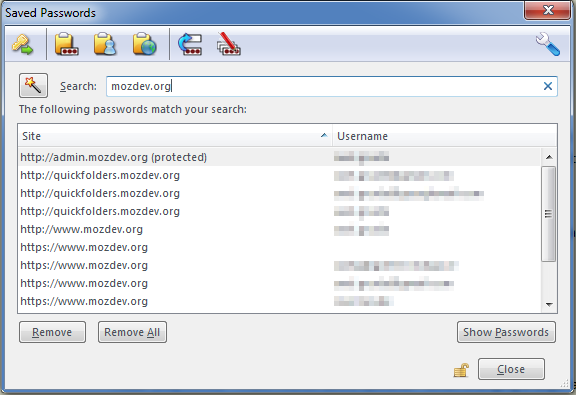
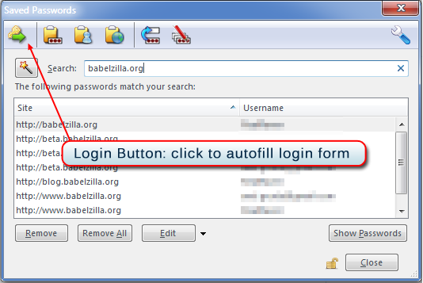
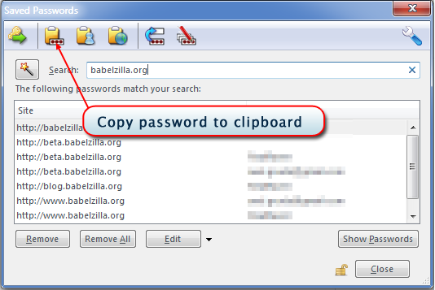
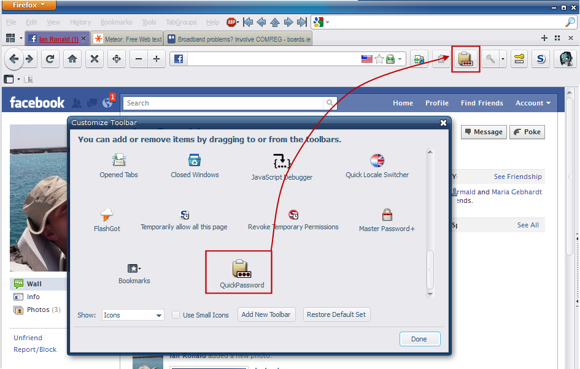

quickpasswords
| resources: | Home Getting Started Version History Screenshots Donations Bugs Source Code Members |
|---|
QuickPasswords :: Getting Started
To download the latest released version of QuickPasswords, head on over to Download latest Releases of QuickPasswords
To get started, simply install the version above. After restart you will have a new context menu entry "Retrieve a Password" in all edit boxes:

This will be displayed as soon as you right-click in any textbox.
Clicking the button will open the built-in (Firefox / Thunderbird / SeaMonkey) Password Manager window. QuickPasswords will also try to fill the password filter dialog with a suitable text so that only relevant entries should be displayed.
When invoking it from a web page, then the easiest way to use QuickPasswords is to double-click on the highlighted item - this will attempt to log you in by matching the stored information from Firefox's built in login manager. Should this fail to find a suitable form field then appropriate context menu items will be created
Any password can also be copied by pressing the [Copy Password!] button. Obviously this will only be useful if you have already stored passwords in the password manager. You can check that the option Tools / Options / Security > Remember Passwords for Sites is enabled.
I don't know how to store passwords! (skip this, I already know!)
How do I make Firefox remember my usernames and passwords?
QuickPasswords will only be able to find passwords that are previously stored, which can be easily done with the built in
functionality - if you are not sure, please have a look at the following article first:
Firefox Support: How do I make Firefox remember my usernames and passwords?
But Firefox doesn't prompt me for storing passwords!
First check that the option Tools / Options / Security > Remember Passwords for Sites is enabled.
Not prompting for password storage can also be caused by a site that has a non-standard way of asking for passwords. For instance the site might use Flash or some clever Javascript preventing you from using the built in Password Manager. In that case, I highly recommend using the Saved Password Editor extension, which gives you full control on creating passwords and all aspects of how they are inserted into a page. It is an ideal companion to QuickPasswords.
Logging in with QuickPassword
Now that we are in the Password Manager, we have several choices:
- Magic Wand - use to restrict list to items related to current tab / email / account. Which of the 2 states is best really depends on the site. Some will use the same password on www.fred.com, support.fred.com, product.fred.com; other (mostly big corporate) sites might have specific passwords for specific areas. Therefore this button alternates the password filter between fred.com and subsite.fred.com. It might take a bit of experimentation to find out about which one is more useful to you.
 Login - most of times this is what you want.
It will find the relevant form items and insert password and user name for you. Normally all you need to do then
is click on the Website's Login button.
Login - most of times this is what you want.
It will find the relevant form items and insert password and user name for you. Normally all you need to do then
is click on the Website's Login button.

Should auto-filling the form fail, then QuickPassword will insert the Password and/or User Name on the top of your right-click menu.- Copy Password - if you only need the password, or you want to paste it to a different window or application
 - Changing a password for multiple sites. This can sometimes be really handy when you have a set of different pages that use a global password - the term for this mechanism is SSO (Single Sign On).
Right-clicking the relevant line, "Login to WebSite" is now the new top command, as it is probably the most frequent use case. Once we click this...

Using the right-click Menu on a Web Page
Once the login command is selected the Password Manager window closes (there is an option for disabling this). If the option to "Fill form on Login command" is active, the user name and password are filled in automatically. Without this option (or if the automatic filling fails for some reason) there are now 2 new items in the context menu:

You can insert both User Id and Password with a simple right-click. The clipboard is not used during this operation. For security reasons, the items are removed from the menu as soon as you use them.

If have not used these for some reason, you can remove them from the context menu using "Cancel QuickPassword Login"

The Toolbar Button
I also recommend to add the QuickPasswords button to your toolbar. Click View / Toolbars / Customize... and then drag and drop the QuickPasswords button onto a toolbar area. In case the "view" menu is not visible because the main Firefox menu is hidden, you can use the "Firefox" button instead: Firefox Button > Options > Toolbar Layout...
For questions or comments about QuickPasswords, please send a message to
For questions or comments not about a specific project, please read our feedback page.
Copyright © 2000-2011. All rights reserved. Terms of Use & Privacy Policy.
bullets, mailto, key and mouse icons by Yusuke Kamiyamane under Creative Commons, see: http://p.yusukekamiyamane.com/
X-mas decorations (baubles) by Robert Proksa (fangol) from rgbstock.com